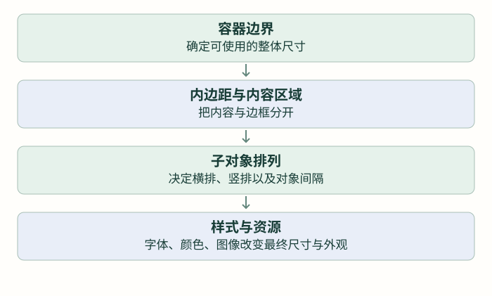

把界面排整齐：布局、样式与显示资源
从一张卡片理解容器、留白和排布，再让文字、颜色与按钮形成一致的视觉层级。
前置：完成上一篇「第一个界面：对象、标签与常用控件」。各篇独立示例按说明替换，不把多份页面创建循环叠在一起。
对象已经能显示，为什么界面还是容易乱？
一个标签可以手动放在中心；标签多了，如果每个对象都写绝对坐标，标题加长、数值增加一位、字体变大时就容易互相遮挡。布局负责安排对象之间的位置关系，样式负责安排它们的外观。
先做一个 240×240 的卡片界面：顶部标题，中间一组数值与单位，底部按钮。圆屏的角落不可见，重要内容先留在中央区域，不把矩形屏幕上的四角都当作可用区域。

把会一起移动的内容，放进同一个父对象
lv_obj_create(parent) 创建普通容器，返回 lv_obj_t 指针；容器也有位置、尺寸与样式。它可以装“数值＋单位”这一组对象，改变容器位置就能整体移动。
容器默认可能带背景、边框、内边距和滚动设置。第一次不要一看到位置不对就四处补偏移，先查父对象的内容区域。lv_obj_clear_flag(obj, flags) 无返回值，清除指定行为标志；例如 LV_OBJ_FLAG_SCROLLABLE 表示是否可滚动。
先用对齐，再在重复排列时使用 Flex
lv_obj_align 围绕父对象对齐，lv_obj_align_to 则围绕另一个对象对齐。后者参数依次为当前对象、参照对象、对齐方式、横纵偏移，无返回值。内容尺寸变化时应重新确认关系，不能假定一次对齐永远跟随所有变化。
如果多个对象需要依次排成行或列，Flex 更适合。先认识三个概念：主方向决定横排还是竖排；间距是相邻对象之间的空隙；内边距是容器边缘与内容之间的空隙。
| 接口 | 参数 | 用途 |
|---|---|---|
| lv_obj_set_flex_flow | 容器、方向 | ROW 横排，COLUMN 竖排，带 WRAP 的方向可换行 |
| lv_obj_set_flex_align | 容器、主方向对齐、横向对齐、多行对齐 | 分别安排不同方向的剩余空间 |
| lv_obj_set_style_pad_all | 对象、边距值、选择器 | 给内容四周留白 |
| lv_obj_set_style_pad_column / pad_row | 对象、间距值、选择器 | 设置横向或纵向对象间隔 |
这些设置函数没有返回值。最后的样式选择器先用 0，表示本体的默认状态；下一部分再解释部件和状态。Flex 需要 lv_conf.h 启用 LV_USE_FLEX；布局已经接管的子对象，不再反复给它们手写一套互相冲突的坐标。
独立页面创建时调用一次；父对象使用 card，不给标签另写坐标
lv_obj_t *card = lv_obj_create(lv_scr_act());
lv_obj_set_size(card, 190, 150);
lv_obj_center(card);
lv_obj_clear_flag(card, LV_OBJ_FLAG_SCROLLABLE);
lv_obj_set_style_pad_all(card, 12, 0);
lv_obj_set_style_pad_row(card, 10, 0);
lv_obj_set_flex_flow(card, LV_FLEX_FLOW_COLUMN);
lv_obj_set_flex_align(card, LV_FLEX_ALIGN_CENTER,
LV_FLEX_ALIGN_CENTER, LV_FLEX_ALIGN_CENTER);
lv_obj_t *title = lv_label_create(card);
lv_label_set_text(title, "STATUS");
lv_obj_t *value = lv_label_create(card);
lv_label_set_text(value, "72 BPM");Grid 则适合明确的行列网格，例如两列设置项。它需要持续有效的行列描述数组和每个子对象的格子位置。本篇先把 Flex 的一行、一列练熟；进入复杂设置页时再按官方 Grid 接口扩展，不为了一个简单卡片同时引入两套布局系统。
样式不是另一种绘图代码，而是对象外观的描述
先从本地样式开始：lv_obj_set_style_bg_color(obj,color,selector) 设置背景色；lv_obj_set_style_text_color 设置文字色；lv_obj_set_style_radius 设置圆角；这些函数无返回值。lv_color_hex(0xRRGGBB) 接收一个常见 RGB 颜色数值，返回当前颜色类型。
接在 card、title、value 已创建之后，改变已有对象外观
lv_obj_set_style_bg_color(card, lv_color_hex(0x153D36), 0);
lv_obj_set_style_radius(card, 16, 0);
lv_obj_set_style_text_color(title, lv_color_hex(0xA6CFC4), 0);
lv_obj_set_style_text_color(value, lv_color_hex(0xFFFFFF), 0);选择器：改哪个部件，在什么状态下生效？
按钮本体是 LV_PART_MAIN，进度条填充部分常是 LV_PART_INDICATOR。默认状态和按下状态也可能使用不同外观。选择器可以把部件与状态按位或组合，例如 LV_PART_MAIN | LV_STATE_PRESSED。对象不是所有状态都只有一种颜色。
共享样式的类型是 lv_style_t。lv_style_init(style) 初始化，lv_style_set_bg_color(style,color) 等设置属性，lv_obj_add_style(obj,style,selector) 挂到对象上，这些都无返回值。共享样式需长期存在，不能在创建函数里用一个很快失效的局部结构。
button 已创建；共享样式有长期存储，别在刷新循环里反复初始化
static lv_style_t action_style;
/* 初始化阶段仅执行一次；重复设置前要按样式生命周期处理。 */
lv_style_init(&action_style);
lv_style_set_bg_color(&action_style, lv_color_hex(0x167D67));
lv_style_set_radius(&action_style, 12);
lv_obj_add_style(button, &action_style, LV_PART_MAIN);本地样式、共享样式、主题和状态都会影响最终外观。查“改色不生效”时先确认对象、部件和状态，再检查覆盖关系；不要不停添加同一种样式。改了共享样式后，还要按 LVGL 样式通知接口让使用者重新计算，第一轮可先在创建前确定样式值。
字体、图片与圆屏留白也属于布局的一部分
英文能显示、中文却变方框，通常要先查字体是否包含对应字形，而不是 SPI 连线。使用当前 LVGL 8.3 格式的字体和图像描述，按资源许可保存来源；图片需要匹配颜色深度与透明度格式，不是任意 BMP 原始文件都能直接交给 img。
本仓库 ui_hr.c 使用心形图像而非默认字体中不存在的字符；ui.c 的页面圆点则用横向 Flex。观察 ui.c 的 dots_create，再看 ui_hr.c 的创建函数，分别找出容器、对象、样式、字体和对齐。那些动画设置可以留到后面的生命周期篇，不必第一次一起看懂。
本篇练习：把 Count 页面改成标题、数值、单位、按钮四部分；数值从 9 变 100 仍不遮挡单位，改变容器宽度后关系合理，重要内容避开圆屏角落。不要用不断增加硬编码偏移来掩盖父子关系或内边距的问题。
检查理解
参考与项目源码
- LVGL 8.3 · layouts/flex
- LVGL 8.3 · layouts/grid
- LVGL 8.3 · overview/style
- LVGL 8.3 · overview/font
- LVGL 8.3 · overview/image
按仓库实际的 LVGL 8.3.11 与本地头文件组织接口。教学图与网页模型不是设备实测；源码引用均使用 GitHub 文件页。完整索引见 资料来源。